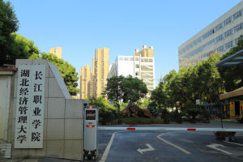
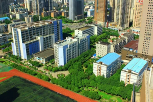
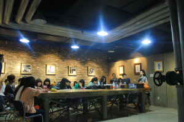

.jpg)
湖北省招生代码8410
全国招生代码10956
学校简介
湖北省最佳文明单位
中共湖北省委高校工委省教育厅直属高校
权威机构评定的全国专科院校100强院校
国家奖助学金覆盖面超过30%的高校
就业率一直保持在96%以上的高校
公办高校 教育厅直属
长江职业学院（湖北经济管理大学）是国家教育部批准独立设置，由湖北省人民政府主办、湖北省教育厅直属的公办全日制普通高等学校。学校充足的财政拨款保障，为办好人民满意的高职院校奠定坚实的基础。

光谷闹市 区位优势大
地处美丽的南湖之滨、“武汉.中国光谷”核心地段。主校区在武昌雄楚大街与民族大道交汇处，步行不到10分钟即可到达光谷广场。东校区在东湖高新技术开发区的武昌流芳园路，附近高校林立，企业众多。西校区在美丽南湖边的书城路与南湖大道交汇处附近。

历史悠久 湖北首批高职
学校发展饱经风雨，数度变迁。1984年8月，湖北省人民政府批准湖北省社会科学联合会创办湖北经济管理大学；1990年10月，省政府决定将湖北经济管理大学划归湖北省教育厅领导；1998年10月，省政府决定将武汉冶金安全技术职工大学并入湖北经济管理大学；1999年7月，教育部批准在湖北经济管理大学基础上建立长江职业学院，是湖北省第一批高职院校；2015年6月，省政府决定将创办于1975年的湖北省医药学校整体并入长江职业学院。
造富大学 就业形势好
学校立足中国光谷和武汉科技新城，面向湖北，辐射长江经济带，服务国家“四个全面”战略布局和创新驱动发展战略，办学40余年，已为国家培养了15万余名各类专门人才，以吉利集团董事长李书福、总裁安聪慧等为代表的一大批毕业生已逐步成为社会英才。
学校具有良好的办学声誉，人才培养工作引起社会高度关注。2013年，长江职业学院被列为中国造富大学排行榜前100名唯一上榜的高职院校，在全国高校中排名第85位。2015年中国大学竞争力排名,入围中国专科院校100强，在全国1322所专科院校中排名第44位。学校面向全国招生，现有全日制在校学生12000多人，招生“进口旺”、就业“出口畅”，毕业生连续三年一次性就业率均超过96%，位居湖北高职院校前列。
.jpg)
专业众多 特色鲜明
学校设有12个教学单位（10院1部1中心），即艺术设计学院、财会金融学院、电商物流学院、旅游信息学院、机电汽车学院、建筑工程学院、生物医药学院、音乐传媒学院、继续教育学院、国际学院、公共课部、实践教学中心。开设有艺术设计、财经、制造、电子信息、土建、旅游管理、文化教育、生化药品、轻纺食品等九大类50个专业。
学校拥有动画制作、市场营销、生物技术、药品食品检验、计算机应用等五个国家级实训基地和全国物流职业教育人才培养基地。学校牵头组建了湖北省动漫职业教育集团，并获批湖北动漫职业教育品牌建设项目（湖北省十大职业教育品牌之一）；校办企业——湖北益康制药厂已经建设成为集“产、学、研、训”为一体的实训基地。学校先后投资近亿元建成了动漫制作、艺术设计、市场营销、电子商务、机电一体化、汽车电控和药品检测等100多个校内实习实训室和200多个校外实习实训基地。与水晶石教育集团、吉利集团、苏宁云商、京东、百度、武汉九州通集团、武汉烽火科技集团、新西兰渲奇数字科技公司等一批知名企业建立了长期稳定的校企合作关系，开办有“水晶石班”、“渲奇班”、“吉利班”等32个订单班，有效保证了人才培养质量，极大促进了学生的实践动手能力、创新创业能力以及就业择业能力，充分保障了毕业生的就业渠道和就业质量。

师资雄厚 育人成果丰硕
共有专兼职教师646名，其中教授87人、副教授331人。学校拥有一批省级重点专业、省级教学团队、省级精品课程和楚天技能名师，多次获得省政府教学成果奖、科研成果奖和其他各类奖项。近三年来，教师指导学生在国内各类职业技能大赛中捧杯夺筹，获得国家级、省级荣誉600余项。
质量过硬 媒体广泛关注
学校高质量的办学及丰富的校园文化活动，为学生营造了良好的成长成才环境，也引起了新闻媒体的广泛关注。平均每周就有1-2家中央、省、市级新闻媒体报道学校。 学校率先试行的“教师课堂教学效果承诺制”和组建12年之久的“大学生雷锋连”、连续10年评选“感动校园人物”等事件被光明日报、中国教育报、中国青年报等30余家媒体持续、深入报道，在社会上引起了强烈反响。
.jpg)
理念科学 引领科学办学
学校本着“江通天下、职领未来”的办学思想和“传承拓新、质量为本、特色发展、开放融合”的治校理念，形成了“与时俱进”的校风、“厚德尚能”的教风、“笃学善行”的学风。学校实施“人才强校、机制活校”战略，全面贯彻党的教育方针，坚持以立德树人为根本，以服务发展为宗旨，以促进就业为导向，坚持适应需求、面向人人，坚持产教融合、校企合作，坚持工学结合、知行合一，不断创新人才培养模式，不断加强技术技能积累，不断提升人才培养质量，培养面向生产、建设、管理、服务一线，具有高尚职业道德、良好职业能力、较强创新创业精神的高素质技术技能人才。人才培养过程注重“知识、能力、素质”的协调发展，教学内容注重“科学精神与人文素质、理论教育与实践教学、适应能力与创新精神”的有机结合，素质教育注重“诚信、勤劳、沟通、奉献”的八字方针。倡导“根雕式教育艺术”，相信“人人有才”，致力“人人成才”，因时因势发掘潜能，引导学生成人成才并走向成功。学校将技术创新、能力拓展、文化活动、社会实践等作为提高学生综合素质、促进学生全面发展的重要途径，营造健康、高雅、向上的“艺术长职、人文长职、创新长职”校园文化，着力打造办学定位准确、专业特色鲜明、社会服务能力强、与地方经济建设和社会发展需要契合度高、全国知名的特色高等职业院校。
开放办学 中外交流广泛
学校不断拓宽办学思路，积极加强与国外、境外高校的交流与合作，先后与加拿大、美国、日本、韩国等8个国家和地区的12所院校建立了国际、境外合作关系。